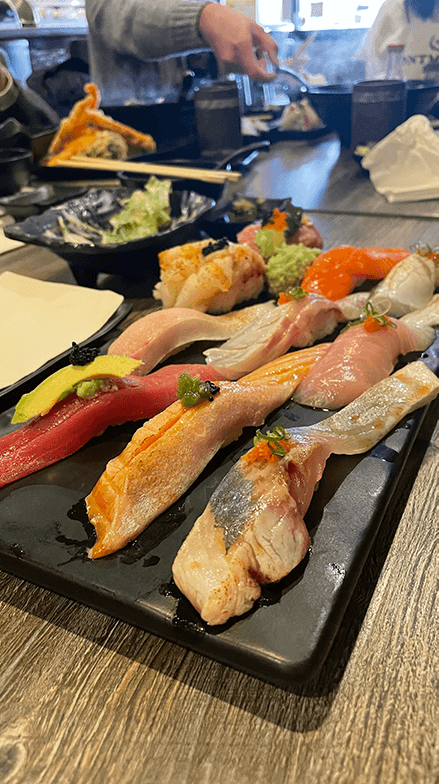

I took the image above as a Christmas present for my partner. He absolutely loves the bridge and any time we pass a shirt or photograph with this bridge he wants to buy it. He had been talking about how he wanted a beautiful picture of it to hang up in his room but didn't have the money to buy one. So I decided to make an HDR image of the bridge for him since the bridge is not only his favorite but also a representation of our relationship as many of our dates and important memories have happened near the bridge or somewhere in Sacramento.
Since this bridge has been the center of many memories with my partner I thought it would be fun to use it to tell a story of our relationship. We had our first date at the Crocker which is to the right of the bridge. We've visited Old Town Sacramento together many times which is visible to the left of the bridge. We've been by ourselves, with my best friend whom I've been friends with for over 14 years, and with his mom when she visited all the way from Japan. This bridge is an archive of the memories I've made with not only my partner but a lot of the people that mean a lot to us as well and I believe it is the perfect archive to tell about me.
Second Analysis:
Partner's Photo

Fig.2 - Marvis 2023
This image looks like it was taken at a sushi restaurant of multiple different types of nigiri. It was definitely taken in California since there is a slice of avocado on top of one of the pieces of sushi and avocado on Sushi is a very Californian addition. It also looks like there are other people in the background of this photograph so it might have been an outing with friends or family.
The sushi is definitely the subject of the image and mostly fills the frame, but the line of the fish leads your eyes toward the background to look at the people and specifically the hand. Then the movement of the hand leads your eyes back to the Nigiri forcing the viewer to look at all of the photograph. However, the most interesting thing about this photograph is the possible story behind it. The movement in the background with the people makes me curious about who they are and I also know that Nigiri sushi is expensive so it makes me wonder if it was for a special occasion.
Thinking Visually
Feb. 9th, 2023
This article “10 intriguing Photographs to Teach Close Reading and Visual Skills" talks about how the Times has a series where they would present their readers with an interesting picture without the caption and encourage them to comment what they believe is happening in the picture. This reminds me of how scientists explore a topic. Most of the time scientists have the bigger picture of something in our universe but they need to examine that thing closer and focus on the details in relation to the whole in order to understand why that bigger picture does what it does.
This concept of examining the detail in relation to the whole is also applicable for design because as designers we need to be detail oriented to create truly wonderful designs. We are normally given a bigger problem and then we have to design something to solve that issue and that require extreme attention to detail
Example:
Inspiring Website
The website “Unseen” does a good job at focusing on these details. THey created interactive picture environments that change the scene as you scroll and move your mouse along the page. There does not seem to be one inch of the page that is not interactive in some way.
Researching Overlays
Feb. 2nd, 2023
The article “Overuse of Overlays: How to Avoid Misusing Lightboxes” did a good job at explaining how frustrating lightboxes can be for users if not used correctly. My main takeaway is that you should use overlays in moderation and only if absolutely necessary. The problem with overlays seems to be that when the method first came out designers started using them with everything. It was a way to be lazy and add external information while avoiding changing the navigation. However, this created a lot of user frustration as the overlays were not being used appropriately.
However, something that I found interesting was what he said about why forms tend to have the more difficult questions at the end. This is because once users fill out the easier questions, they are less likely to abandon the form once they get to the more difficult information to fill out because they are already invested. This is a technique I have seen used over and over again in the forms that I have filled out, but I never knew the reason for it until now.
Researching Form Design
Jan. 27th, 2023
Most of the advice from the article “Best practices for form design” by Salim Ansari, is common design knowledge and applicable to most website designs. Such as avoiding large chunks of information that creates cognitive overload, not including more information than necessary, or pushing the user down the page with a vertical layout rather than a horizontal one.
However, something that I found interesting was what he said about why forms tend to have the more difficult questions at the end. This is because once users fill out the easier questions, they are less likely to abandon the form once they get to the more difficult information to fill out because they are already invested. This is a technique I have seen used over and over again in the forms that I have filled out, but I never knew the reason for it until now.
Example:
Good form design
The “Pets by Spotify” form is an example of best practices for form design. It is very interactive, quick, and has minimal questions. It also chunks each question onto a separate page and does not require any scrolling.